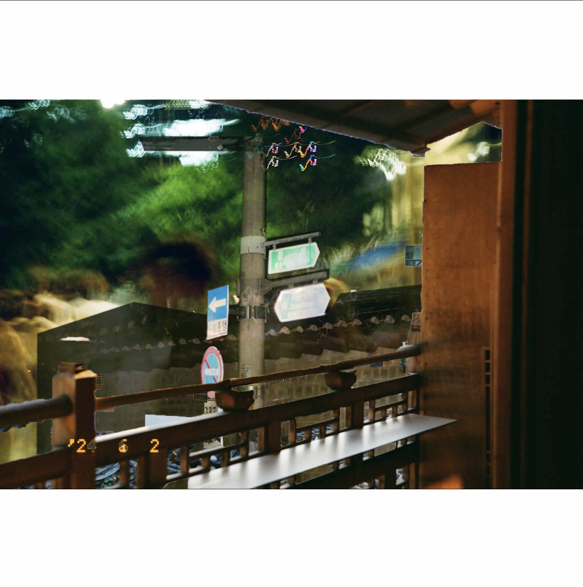

Photo Collage
This is a photomontage created by combining the first photographs I took with my dad's film camera, which he used 30 years ago.
The scenes captured through the viewfinder, seen through the eyes of a young man who was not yet a father, bring to life the memories of a time I never experienced,
filled with shining but clumsy youth. The photographs taken with the film camera convey the emotions and
feelings of that era as vividly as if I had hurriedly pressed pause on a video. Like my dad, I recorded these moments to pass on memories
to someone else.
That someone could be another person or even my future self.
RETURN
luka0307@sogang.com